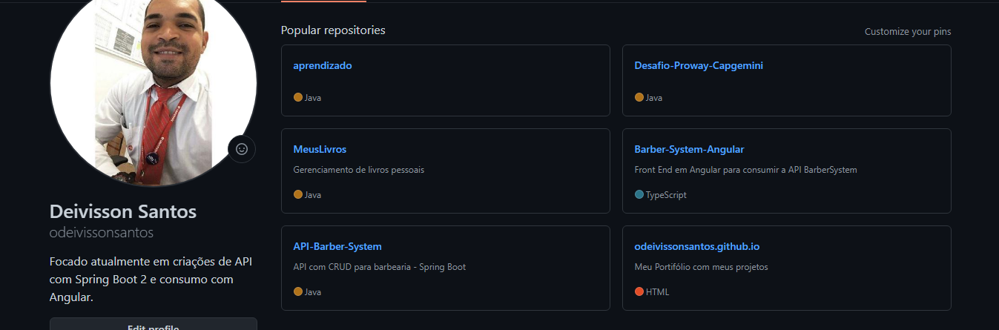
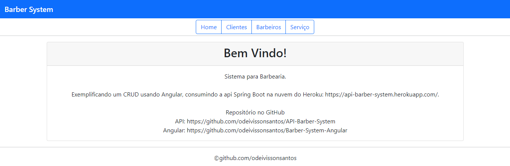

Meu nome é Deivisson, tenho 29 anos e sou natural de Salvador, onde vivo até hoje. Moro com minha esposa e não tenho filhos. Sou apaixonado por tecnologia, desde os meus 14 anos que tive o meu próprio computador e assim já fazia manutenções, com 16 anos comecei a trabalhar numa Lan House afim de garantir experência. Mas, como a vida nos oferece oportunidades, começei a trabalhar na Drogasil S/A começando como operador de caixa e com pensamento no futuro, me formei em Administração de Empresa, passei a ser Balconista, logo após Gerente Adjunto e hoje sou gerente desta empresa que atuo há aproximadamente 9 anos. Como os últimos 4 anos foram só vivendo para o trabalho, resolvi sair da zona de conforto e entrar no curso de Gestão da Tecnologia da Informação voltando para a área que amo e tendo como consequência a transição de carreira. Estou me aprimorando cada dia mais em busca de ser um Web Developer focado em Spring Boot 2 e Angular.

- 2008/2009 - Defensoria Pública da Bahia
Cargo: Estagiário Administrativo.
- 2011/2012 - Extra Hipermercado
Cargo: Operador de Hiper
- 2012/Atual - Drogasil S/A
Cargo: Atendente 1 / Atendente 2 / Gerente Adjunto de Loja / Gerente de Loja

Ensino Superior Completo
- Instituição: IBES / ISEC
Curso: Adm. de Empresas
Conclusão: Junho/2016
- Instituição: Estácio de Sá
Curso: Gestão da Tecnologia da Informação
Conclusão: Julho/2021
Para visualizar meus Cursos:
Um dos meus favoritos é viajar ou até mesmo fazer um pequeno passeio de moto.
Ver e tomar um banho de mar me acalma, sempre tiro um tempo, mesmo que seja só pra dá uma olhadinha.